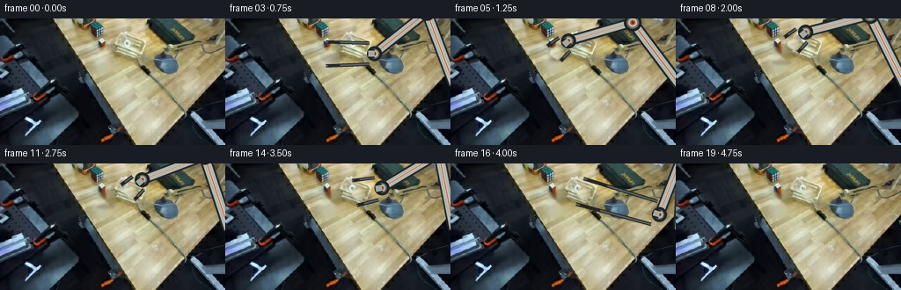
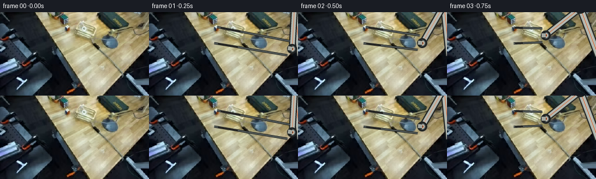

CODING AGENTS AS PIXEL WORLD MODELS
traex/DeepSeek-V4.1-Flash · common50_0010
点击播放 · 原生 RGB 像素
此结果可播放，但该运行尚未通过最终提交审核。页面展示不代表评测通过。
逐轮保存的候选
回放视频、检查图与代码变化。
每份候选均可单独播放。实际图片检查记录在下方工具轨迹中。
候选 01播放与检查图
点击播放 · 原生 RGB 像素


展开代码变化
--- 上一保存版本
+++ 本次保存版本
@@ -0,0 +1,329 @@
+from pathlib import Path
+import math
+
+import cv2
+import numpy as np
+from PIL import Image, ImageDraw, ImageFilter
+
+import artifact_io
+
+
+CASE_DIR = Path(__file__).resolve().parent
+FRAME_SIZE = (256, 144)
+SCALE = 4
+
+
+def smoothstep(t):
+ t = max(0.0, min(1.0, t))
+ return t * t * (3.0 - 2.0 * t)
+
+
+def mix(a, b, t):
+ return tuple(int(round(a[i] + (b[i] - a[i]) * t)) for i in range(3))
+
+
+def point_mix(a, b, t):
+ return (a[0] + (b[0] - a[0]) * t, a[1] + (b[1] - a[1]) * t)
+
+
+def crop_cube(source):
+ """Return the visible cube as an RGBA sprite and a clean table plate."""
+ x0, y0, x1, y1 = 107, 28, 132, 53
+ crop = source[y0:y1, x0:x1].copy()
+
+ # The silhouette follows the three visible faces of the little cube.
+ polygon = np.array(
+ [(4, 8), (13, 4), (22, 9), (22, 17), (13, 23), (4, 17)],
+ dtype=np.int32,
+ )
+ mask = np.zeros(crop.shape[:2], dtype=np.uint8)
+ cv2.fillPoly(mask, [polygon], 255)
+ mask = cv2.erode(mask, np.ones((3, 3), np.uint8), iterations=1)
+ mask = cv2.GaussianBlur(mask, (3, 3), 0)
+
+ alpha = mask.astype(np.float32) / 255.0
+ rgba = np.dstack([crop, (alpha * 255).astype(np.uint8)])
+
+ # Remove the source cube and its contact shadow from the table plate.
+ removal = np.zeros(source.shape[:2], dtype=np.uint8)
+ cv2.fillPoly(
+ removal,
+ [polygon + np.array([x0, y0], dtype=np.int32)],
+ 255,
+ )
+ cv2.rectangle(removal, (109, 45), (130, 52), 255, -1)
+ removal = cv2.dilate(removal, np.ones((3, 3), np.uint8), iterations=1)
+ clean = cv2.inpaint(source, removal, 3, cv2.INPAINT_TELEA)
+ return rgba, clean
+
+
+def warp_cube(sprite, center, angle, scale):
+ h, w = sprite.shape[:2]
+ matrix = cv2.getRotationMatrix2D((w / 2.0, h / 2.0), angle, scale)
+ matrix[0, 2] += center[0] - w / 2.0
+ matrix[1, 2] += center[1] - h / 2.0
+ return cv2.warpAffine(
+ sprite,
+ matrix,
+ FRAME_SIZE,
+ flags=cv2.INTER_LINEAR,
+ borderMode=cv2.BORDER_CONSTANT,
+ borderValue=(0, 0, 0, 0),
+ )
+
+
+def composite_rgba(base, rgba):
+ rgb = base.astype(np.float32)
+ alpha = rgba[:, :, 3:4].astype(np.float32) / 255.0
+ out = rgb * (1.0 - alpha) + rgba[:, :, :3].astype(np.float32) * alpha
+ return np.clip(out, 0, 255).astype(np.uint8)
+
+
+def solve_arm(shoulder, wrist, upper, lower):
+ dx, dy = wrist[0] - shoulder[0], wrist[1] - shoulder[1]
+ distance = max(1e-3, math.hypot(dx, dy))
+ distance = min(distance, upper + lower - 1e-3)
+ ux, uy = dx / distance, dy / distance
+ along = (upper * upper - lower * lower + distance * distance) / (2.0 * distance)
+ height = math.sqrt(max(0.0, upper * upper - along * along))
+ mid = (shoulder[0] + along * ux, shoulder[1] + along * uy)
+ candidates = [
+ (mid[0] - height * uy, mid[1] + height * ux),
+ (mid[0] + height * uy, mid[1] - height * ux),
+ ]
+ elbow = min(candidates, key=lambda point: point[1])
+ actual_wrist = (shoulder[0] + distance * ux, shoulder[1] + distance * uy)
+ return elbow, actual_wrist
+
+
+def scaled(point):
+ return (point[0] * SCALE, point[1] * SCALE)
+
+
+def draw_link(draw, a, b, width, body=(178, 182, 174)):
+ a4, b4 = scaled(a), scaled(b)
+ draw.line((a4, b4), fill=(34, 38, 38, 255), width=int((width + 4) * SCALE))
+ draw.line((a4, b4), fill=(*body, 255), width=int(width * SCALE))
+ highlight = mix(body, (238, 238, 224), 0.55)
+ draw.line((a4, b4), fill=(*highlight, 255), width=max(2, int(width * 0.24 * SCALE)))
+ accent = (198, 83, 35)
+ draw.line((a4, b4), fill=(*accent, 255), width=max(1, int(width * 0.12 * SCALE)))
+
+
+def draw_joint(draw, center, radius):
+ c4 = scaled(center)
+ r4 = radius * SCALE
+ draw.ellipse(
+ (c4[0] - r4 - 3 * SCALE, c4[1] - r4 - 3 * SCALE,
+ c4[0] + r4 + 3 * SCALE, c4[1] + r4 + 3 * SCALE),
+ fill=(30, 34, 34, 255),
+ )
+ draw.ellipse(
+ (c4[0] - r4, c4[1] - r4, c4[0] + r4, c4[1] + r4),
+ fill=(104, 110, 108, 255),
+ )
+ draw.ellipse(
+ (c4[0] - r4 * 0.72, c4[1] - r4 * 0.72,
+ c4[0] + r4 * 0.72, c4[1] + r4 * 0.72),
+ fill=(188, 190, 177, 255),
+ )
+ draw.ellipse(
+ (c4[0] - r4 * 0.42, c4[1] - r4 * 0.42,
+ c4[0] + r4 * 0.42, c4[1] + r4 * 0.42),
+ fill=(202, 86, 38, 255),
+ )
+ draw.ellipse(
+ (c4[0] - r4 * 0.22, c4[1] - r4 * 0.22,
+ c4[0] + r4 * 0.22, c4[1] + r4 * 0.22),
+ fill=(55, 58, 56, 255),
+ )
+
+
+def draw_gripper(draw, wrist, cube_center, opening):
+ wx, wy = wrist
+ cx, cy = cube_center
+ vx, vy = cx - wx, cy - wy
+ length = max(1.0, math.hypot(vx, vy))
+ ux, uy = vx / length, vy / length
+ px, py = -uy, ux
+
+ # Compact wrist housing.
+ near = (wx, wy)
+ far = (wx + ux * 7.0, wy + uy * 7.0)
+ draw.line((scaled(near), scaled(far)), fill=(31, 35, 35, 255),
+ width=10 * SCALE)
+ draw.line((scaled(near), scaled(far)), fill=(164, 168, 160, 255),
+ width=7 * SCALE)
+
+ root = (wx + ux * 6.0, wy + uy * 6.0)
+ finger_length = max(11.0, length - 2.0)
+ for side in (-1, 1):
+ offset = opening * 0.5
+ root_side = (root[0] + px * offset * side, root[1] + py * offset * side)
+ tip_side = (
+ root_side[0] + ux * finger_length + px * 1.6 * side,
+ root_side[1] + uy * finger_length + py * 1.6 * side,
+ )
+ draw.line(
+ (scaled(root_side), scaled(tip_side)),
+ fill=(28, 31, 31, 255),
+ width=4 * SCALE,
+ )
+ draw.line(
+ (scaled(root_side), scaled(tip_side)),
+ fill=(87, 94, 92, 255),
+ width=2 * SCALE,
+ )
+ pad_start = point_mix(root_side, tip_side, 0.68)
+ pad_end = point_mix(root_side, tip_side, 0.95)
+ draw.line(
+ (scaled(pad_start), scaled(pad_end)),
+ fill=(35, 35, 33, 255),
+ width=3 * SCALE,
+ )
+
+
+def arm_layer(shoulder, wrist, cube_center, opening):
+ layer = Image.new("RGBA", (FRAME_SIZE[0] * SCALE, FRAME_SIZE[1] * SCALE), (0, 0, 0, 0))
+ draw = ImageDraw.Draw(layer)
+ elbow, wrist_actual = solve_arm(shoulder, wrist, 88.0, 76.0)
+ draw_link(draw, shoulder, elbow, 9.5)
+ draw_link(draw, elbow, wrist_actual, 8.0)
+ draw_joint(draw, elbow, 7.0)
+ draw_joint(draw, wrist_actual, 5.5)
+ draw_gripper(draw, wrist_actual, cube_center, opening)
+ return layer
+
+
+def arm_shadow(shoulder, wrist, cube_center, opening):
+ layer = Image.new("L", (FRAME_SIZE[0] * SCALE, FRAME_SIZE[1] * SCALE), 0)
+ draw = ImageDraw.Draw(layer)
+ elbow, wrist_actual = solve_arm(shoulder, wrist, 88.0, 76.0)
+ shift = (3.0, 4.5)
+ a = (shoulder[0] + shift[0], shoulder[1] + shift[1])
+ e = (elbow[0] + shift[0], elbow[1] + shift[1])
+ w = (wrist_actual[0] + shift[0], wrist_actual[1] + shift[1])
+ draw.line((scaled(a), scaled(e)), fill=135, width=12 * SCALE)
+ draw.line((scaled(e), scaled(w)), fill=135, width=10 * SCALE)
+ c = (cube_center[0] + shift[0], cube_center[1] + shift[1])
+ draw.ellipse(
+ ((c[0] - opening * 0.55) * SCALE, (c[1] - 5) * SCALE,
+ (c[0] + opening * 0.55) * SCALE, (c[1] + 5) * SCALE),
+ fill=110,
+ )
+ layer = layer.filter(ImageFilter.GaussianBlur(1.5 * SCALE))
+ return np.asarray(layer.resize(FRAME_SIZE, Image.Resampling.LANCZOS))
+
+
+def cube_shadow(center, height, scale):
+ layer = Image.new("L", (FRAME_SIZE[0] * SCALE, FRAME_SIZE[1] * SCALE), 0)
+ draw = ImageDraw.Draw(layer)
+ spread = 7.5 * scale + height * 0.28
+ cx = center[0] + height * 0.18
+ cy = center[1] + 5.0 + height * 0.35
+ draw.ellipse(
+ ((cx - spread) * SCALE, (cy - 2.8 * scale) * SCALE,
+ (cx + spread) * SCALE, (cy + 2.8 * scale) * SCALE),
+ fill=max(55, int(145 - height * 3.4)),
+ )
+ layer = layer.filter(ImageFilter.GaussianBlur(1.3 * SCALE))
+ return np.asarray(layer.resize(FRAME_SIZE, Image.Resampling.LANCZOS))
+
+
+def add_shadow(base, mask, color=(52, 42, 31)):
+ alpha = (mask.astype(np.float32) / 255.0)[:, :, None] * 0.55
+ out = base.astype(np.float32) * (1.0 - alpha) + np.array(color, np.float32) * alpha
+ return np.clip(out, 0, 255).astype(np.uint8)
+
+
+def main():
+ first = np.array(Image.open(CASE_DIR / "first_frame.png").convert("RGB"))
+ sprite, clean = crop_cube(first)
+ Image.fromarray(clean).save(CASE_DIR / ".tmp" / "clean_table.png")
+
+ cube_start = (118.5, 40.5)
+ cube_lift = (120.5, 37.5)
+ cube_final = (151.0, 33.0)
+ shoulder = (260.0, 75.0)
+ parked_wrist = (251.0, 65.0)
+
+ cube_centers = [cube_start] * 5
+ cube_centers += [
+ cube_lift,
+ (124.0, 33.0),
+ (129.0, 29.5),
+ (134.0, 27.5),
+ (139.0, 27.0),
+ (144.0, 28.0),
+ (148.0, 30.5),
+ cube_final,
+ cube_final,
+ cube_final,
+ cube_final,
+ cube_final,
+ cube_final,
+ cube_final,
+ cube_final,
+ ]
+ assert len(cube_centers) == 20
+
+ frames = []
+ for index in range(20):
+ if index == 0:
+ frames.append(first.copy())
+ continue
+
+ center = cube_centers[index]
+ moved = index >= 5
+ base = clean.copy() if moved else first.copy()
+
+ # Arm approach, grasp, transport, release, and withdrawal.
+ if index <= 4:
+ approach_t = smoothstep((index - 0.5) / 4.0)
+ wrist = point_mix(parked_wrist, (center[0] + 13.5, center[1] - 12.0), approach_t)
+ opening = 25.0 - 4.0 * smoothstep((index - 2.0) / 3.0)
+ elif index <= 12:
+ wrist = (center[0] + 13.5, center[1] - 12.0)
+ opening = 19.5
+ elif index <= 17:
+ release_center = cube_final
+ release_wrist = (release_center[0] + 13.5, release_center[1] - 12.0)
+ retreat_t = smoothstep((index - 13.0) / 4.0)
+ wrist = point_mix(release_wrist, parked_wrist, retreat_t)
+ opening = 19.5 + 7.5 * smoothstep((index - 13.0) / 1.4)
+ else:
+ wrist = parked_wrist
+ opening = 27.0
+
+ show_arm = index <= 17
+ if show_arm:
+ shadow_mask = arm_shadow(shoulder, wrist, center, opening)
+ base = add_shadow(base, shadow_mask)
+
+ # Cube shadow remains on the table under the lifted object.
+ if 5 <= index <= 12:
+ lift = max(0.0, cube_start[1] - center[1])
+ shadow_mask = cube_shadow(cube_start, lift, 1.0)
+ base = add_shadow(base, shadow_mask)
+
+ if moved:
+ angle = -9.0 * smoothstep((index - 5.0) / 8.0)
+ scale = 1.0 - 0.045 * smoothstep((index - 5.0) / 8.0)
+ cube_rgba = warp_cube(sprite, center, angle, scale)
+ base = composite_rgba(base, cube_rgba)
+
+ if show_arm:
+ overlay = arm_layer(shoulder, wrist, center, opening)
+ overlay = np.asarray(overlay.resize(FRAME_SIZE, Image.Resampling.LANCZOS))
+ base = composite_rgba(base, overlay)
+
+ frames.append(base)
+
+ frames = np.stack(frames).astype(np.uint8)
+ assert frames.shape == (20, 144, 256, 3)
+ assert np.array_equal(frames[0], first)
+ artifact_io.save(frames, CASE_DIR)
+
+
+if __name__ == "__main__":
+ main()
可观测工具轨迹
实际执行的命令与返回图片。
命令 1exit 0
/bin/bash -c "pwd && rg --files -g 'prompt.txt' -g 'GENERATION_RULES.md' -g '"'!*.pyc'"'"
命令 2exit 0
/bin/bash -c 'ls -la'
命令 3exit 0
/bin/bash -c 'git status --short --branch'
命令 4exit 0
/bin/bash -c 'cat prompt.txt'
命令 5exit 0
/bin/bash -c 'cat GENERATION_RULES.md'
命令 6exit 0
/bin/bash -c 'cat task_spec.json'
命令 7exit 0
/bin/bash -c "sed -n '1,240p' artifact_io.py"
命令 8exit 0
/bin/bash -c "python - <<'PY'
from PIL import Image
im=Image.open('first_frame.png')
im.resize((1024,576), Image.Resampling.NEAREST).save('.tmp/first_nearest.png')
im.resize((1024,576), Image.Resampling.LANCZOS).save('.tmp/first_lanczos.png')
im.crop((70,0,200,75)).resize((1040,600), Image.Resampling.NEAREST).save('.tmp/objects_crop.png')
PY"命令 9exit 0
/bin/bash -c "python - <<'PY'
from PIL import Image, ImageDraw
im=Image.open('first_frame.png').resize((1024,576), Image.Resampling.NEAREST)
d=ImageDraw.Draw(im)
for x in range(0,256,10):
xx=x*4
d.line((xx,0,xx,576),fill=(255,0,255),width=1)
if x%20==0:d.text((xx+2,4),str(x),fill=(255,255,0))
for y in range(0,144,10):
yy=y*4
d.line((0,yy,1024,yy),fill=(0,255,255),width=1)
if y%20==0:d.text((2,yy+2),str(y),fill=(255,255,0))
im.save('.tmp/grid.png')
PY"命令 10exit 0
/bin/bash -c "python - <<'PY'
from PIL import Image
im=Image.open('first_frame.png')
for name,box in [('cube',(104,30,130,51)),('crate',(125,20,185,57)),('table',(80,0,256,144)),('left',(0,0,100,144)),('topright',(160,0,256,90))]:
im.crop(box).resize(((box[2]-box[0])*10,(box[3]-box[1])*10), Image.Resampling.LANCZOS).save(f'.tmp/{name}.png')
PY"命令 11exit 0
/bin/bash -c "python - <<'PY'
import numpy as np
from PIL import Image
im=np.array(Image.open('first_frame.png'))
# print rough rgb values of notable points
for y,x in [(44,115),(35,114),(38,120),(39,128),(30,130),(38,139),(49,138),(27,164),(34,164),(22,164),(13,191),(5,197),(42,192),(43,204),(20,120),(35,99),(8,95),(56,100)]:
print((x,y),im[y,x])
PY"命令 12exit 0
/bin/bash -c "python - <<'PY' import importlib.util mods=['cv2','scipy','skimage','numpy','PIL'] for m in mods: print(m, bool(importlib.util.find_spec(m))) PY"
命令 13exit 0
/bin/bash -c "python - <<'PY'
from PIL import Image
im=Image.open('first_frame.png')
im.crop((105,28,128,51)).resize((460,460), Image.Resampling.NEAREST).save('.tmp/cube_nearest.png')
PY"命令 14exit 1
/bin/bash -c 'python generate.py'
命令 15exit 0
/bin/bash -c "nl -ba generate.py | sed -n '248,272p'"
命令 16exit 0
/bin/bash -c 'python generate.py'
命令 17exit 0
/bin/bash -c "python - <<'PY'
from PIL import Image, ImageDraw
files=['frames/%02d.png'%i for i in [0,3,4,5,6,7,8,9,10,11,12,13,14,15,16,17,18,19]]
thumbs=[]
for f in files:
im=Image.open(f).resize((512,288),Image.Resampling.NEAREST)
thumbs.append((f,im))
out=Image.new('RGB',(1536,1728),(20,20,20)); d=ImageDraw.Draw(out)
for i,(f,im) in enumerate(thumbs):
x=(i%3)*512;y=(i//3)*288
out.paste(im,(x,y)); d.text((x+8,y+8),f,fill=(255,255,0),stroke_width=1,stroke_fill=(0,0,0))
out.save('.tmp/contact_sheet.png')
PY"命令 18exit 0
/bin/bash -c "ls -lh frames/00.png frames/19.png pixels.npz index.html inspection.png && python - <<'PY'
import numpy as np
from PIL import Image
x=np.array(Image.open('frames/00.png')); y=np.array(Image.open('first_frame.png'))
print('frame00 exact',np.array_equal(x,y))
print('pixels npz', np.load('pixels.npz')['pixels'].shape)
PY"命令 19exit 0
/bin/bash -c "python - <<'PY'
from PIL import Image
for i in [11,12,13,14,15,16,17,18,19]:
im=Image.open(f'frames/{i:02d}.png')
im.crop((100,15,190,65)).resize((900,500),Image.Resampling.NEAREST).save(f'.tmp/f{i:02d}_zoom.png')
PY"命令 20exit 0
/bin/bash -c "python - <<'PY'
from PIL import Image
im=Image.open('first_frame.png')
im.crop((105,30,130,51)).resize((500,420),Image.Resampling.LANCZOS).save('.tmp/cube_detail_lanczos.png')
im.crop((108,32,127,49)).resize((760,680),Image.Resampling.NEAREST).save('.tmp/cube_detail_nearest.png')
PY"命令 21exit 0
/bin/bash -c "python - <<'PY'
from PIL import Image
for i in [1,2,3,4,5,6,7,8,9,10]:
Image.open(f'frames/{i:02d}.png').crop((100,20,150,60)).resize((500,400),Image.Resampling.NEAREST).save(f'.tmp/g{i:02d}.png')
PY"命令 22exit 0
/bin/bash -c "python - <<'PY'
import numpy as np
from PIL import Image
im=np.array(Image.open('first_frame.png'))
# pixel labels in cube region, rough values and colors
for y in range(34,48):
print('%2d'%y, ' '.join('%3d,%3d,%3d'%tuple(im[y,x]) for x in range(111,128)))
PY"命令 23exit 0
/bin/bash -c "python - <<'PY'
from PIL import Image
im=Image.open('first_frame.png')
im.crop((108,31,130,51)).resize((880,800),Image.Resampling.NEAREST).save('.tmp/cube_exact.png')
PY"命令 24exit 0
/bin/bash -c "python - <<'PY'
from PIL import Image
for i in [5,6,7,8,9,10,11,12]:
Image.open(f'frames/{i:02d}.png').crop((110,20,165,50)).resize((880,480),Image.Resampling.NEAREST).save(f'.tmp/h{i:02d}.png')
PY"命令 25exit 0
/bin/bash -c "python - <<'PY'
from PIL import Image,ImageDraw
im=Image.open('first_frame.png').crop((120,15,185,65)).resize((1300,1000),Image.Resampling.NEAREST)
d=ImageDraw.Draw(im)
for x in range(120,186,5):
xx=(x-120)*20; d.line((xx,0,xx,1000),fill=(255,0,255),width=1); d.text((xx+2,4),str(x),fill=(255,255,0),stroke_width=1,stroke_fill=(0,0,0))
for y in range(15,66,5):
yy=(y-15)*20; d.line((0,yy,1300,yy),fill=(0,255,255),width=1); d.text((2,yy+2),str(y),fill=(255,255,0),stroke_width=1,stroke_fill=(0,0,0))
im.save('.tmp/crate_grid.png')
PY"命令 26exit 0
/bin/bash -c "python - <<'PY'
import cv2,numpy as np
from PIL import Image
im=np.array(Image.open('first_frame.png'))
# inspect candidate crate interior color std and edge lines
for y in [21,22,23,24,25,26,27,28,29,30,31,32,33,34,35,36,37,38,39,40]:
vals=[]
for x in range(128,181,4): vals.append(int(im[y,x].mean()))
print(y,vals)
PY"命令 27exit 0
/bin/bash -c "python - <<'PY' import importlib.util for m in ['torch','torchvision','diffusers','transformers','moviepy','imageio','ffmpeg']: print(m, importlib.util.find_spec(m)) PY which ffmpeg || true"
命令 28exit 0
/bin/bash -c "find /home/tiger -maxdepth 5 -type f \\( -name '*.safetensors' -o -name '*.ckpt' -o -name '*.pt' -o -name '*.pth' \\) 2>/dev/null | head -50"
命令 29exit 0
/bin/bash -c "python - <<'PY'
from PIL import Image
im=Image.open('first_frame.png')
im.crop((126,18,181,47)).resize((1100,580),Image.Resampling.NEAREST).save('.tmp/crate_detail.png')
PY"命令 30exit 0
/bin/bash -c "python - <<'PY'
from PIL import Image
im=Image.open('first_frame.png').convert('RGB')
# print ascii map of cube zone by broad categories
for y in range(28,54):
s=''
for x in range(104,135):
r,g,b=im.getpixel((x,y)); mx=max(r,g,b)
if mx>205 and min(r,g,b)>170:s+='W'
elif r>g+18 and r>b+15:s+='R'
elif g>r+5 and g>b+2:s+='G'
elif mx<115:s+='#'
elif mx<150:s+='d'
elif mx<180:s+='.'
else:s+=' '
print(f'{y:02d} {s}')
PY"命令 31exit 0
/bin/bash -c "python - <<'PY'
from PIL import Image
im=Image.open('first_frame.png').convert('RGB')
# crop larger but use lanczos with 20x zoom
im.crop((110,27,132,53)).resize((440,520),Image.Resampling.LANCZOS).save('.tmp/cube_lanczos_big.png')
PY"命令 32exit 0
/bin/bash -c "python - <<'PY'
from PIL import Image
im=Image.open('first_frame.png').convert('RGB')
# Quantized color map at 4x using nearest with dominant bins
for y in range(28,53):
print(f'{y:02d}', ''.join('K' if max(im.getpixel((x,y)))<80 else 'r' if im.getpixel((x,y))[0]>im.getpixel((x,y))[1]*1.25 else 'g' if im.getpixel((x,y))[1]>im.getpixel((x,y))[0]*1.1 and im.getpixel((x,y))[1]>im.getpixel((x,y))[2]*1.05 else 'W' if sum(im.getpixel((x,y)))>620 else 'w' if sum(im.getpixel((x,y)))>500 else 'y' if sum(im.getpixel((x,y)))>420 else '.' for x in range(108,130)))
PY"命令 33exit 0
/bin/bash -c "python - <<'PY'
from PIL import Image
im=Image.open('first_frame.png').convert('RGB')
im.crop((108,27,133,53)).resize((1000,1040),Image.Resampling.NEAREST).save('.tmp/cube_25.png')
PY"命令 34exit 0
/bin/bash -c "python - <<'PY'
import numpy as np
from PIL import Image
im=np.array(Image.open('first_frame.png'))
# find local red/green pixels
for color in ['red','green']:
mask=(im[:,:,0]>im[:,:,1]+15)&(im[:,:,0]>im[:,:,2]+15) if color=='red' else (im[:,:,1]>im[:,:,0]+3)&(im[:,:,1]>im[:,:,2]+2)
yy,xx=np.where(mask & (np.indices(mask.shape)[0]<60) & (np.indices(mask.shape)[1]>100)&(np.indices(mask.shape)[1]<130))
print(color,len(xx), list(zip(xx[:30],yy[:30])))
PY"命令 35exit 0
/bin/bash -c "python - <<'PY'
import numpy as np
from PIL import Image
im=np.array(Image.open('first_frame.png'))
roi=im[27:53,108:133]
# print strongest saturation coordinates in roi
sat=roi.max(2)-roi.min(2)
for i in np.argsort(sat.ravel())[-50:][::-1][:30]:
y,x=divmod(i,roi.shape[1]); print(x+108,y+27,roi[y,x].tolist(),int(sat[y,x]))
PY"命令 36exit 0
/bin/bash -c "python - <<'PY'
from PIL import Image
im=Image.open('first_frame.png')
# massive nearest with coordinate lines every pixel, region cube
box=(108,27,133,53); z=20
im=im.crop(box).resize(((box[2]-box[0])*z,(box[3]-box[1])*z),Image.Resampling.NEAREST)
from PIL import ImageDraw
d=ImageDraw.Draw(im)
for x in range(box[0],box[2]+1):
xx=(x-box[0])*z; d.line((xx,0,xx,im.height),fill=(255,0,255),width=1)
if x%2==0:d.text((xx+1,2),str(x),fill=(255,255,0),stroke_width=1,stroke_fill=(0,0,0))
for y in range(box[1],box[3]+1):
yy=(y-box[1])*z; d.line((0,yy,im.width,yy),fill=(0,255,255),width=1)
if y%2==0:d.text((1,yy+1),str(y),fill=(255,255,0),stroke_width=1,stroke_fill=(0,0,0))
im.save('.tmp/cube_pixelgrid.png')
PY"命令 37exit 0
/bin/bash -c "python - <<'PY'
from PIL import Image
im=Image.open('first_frame.png').convert('RGB')
for y in range(38,51):
print(y,[(x,im.getpixel((x,y))) for x in range(110,130) if max(im.getpixel((x,y)))-min(im.getpixel((x,y)))>15])
PY"命令 38exit 0
/bin/bash -c "python - <<'PY'
from PIL import Image
im=Image.open('first_frame.png')
im.crop((105,0,140,60)).resize((700,1200),Image.Resampling.LANCZOS).save('.tmp/upper_cube_context.png')
PY"命令 39exit 0
/bin/bash -c "python - <<'PY'
from PIL import Image,ImageDraw
im=Image.open('first_frame.png').convert('RGB')
box=(107,35,131,53); z=30
c=im.crop(box).resize(((box[2]-box[0])*z,(box[3]-box[1])*z),Image.Resampling.NEAREST)
d=ImageDraw.Draw(c)
for x in range(box[0],box[2]+1):
xx=(x-box[0])*z; d.line((xx,0,xx,c.height),fill=(255,0,255),width=1)
if x%2==0:d.text((xx+1,2),str(x),fill=(255,255,0),stroke_width=1,stroke_fill=(0,0,0))
for y in range(box[1],box[3]+1):
yy=(y-box[1])*z; d.line((0,yy,c.width,yy),fill=(0,255,255),width=1)
if y%2==0:d.text((1,yy+1),str(y),fill=(255,255,0),stroke_width=1,stroke_fill=(0,0,0))
c.save('.tmp/whitecube_grid.png')
PY"命令 40exit 0
/bin/bash -c "python - <<'PY'
import numpy as np
from PIL import Image
im=np.array(Image.open('first_frame.png')).astype(float)
for y in range(36,51):
s=[]
for x in range(109,130):
r,g,b=im[y,x];
if r+g+b>590:s.append('W')
elif r+g+b>540:s.append('w')
elif r+g+b>480:s.append('.')
elif r+g+b<300:s.append('#')
else:s.append(' ')
print(f'{y:02d}', ''.join(s))
PY"保存候选 1 份；完成命令 40 次；可验证图片返回 0 张。原始 API 响应与完整日志保留在本地。